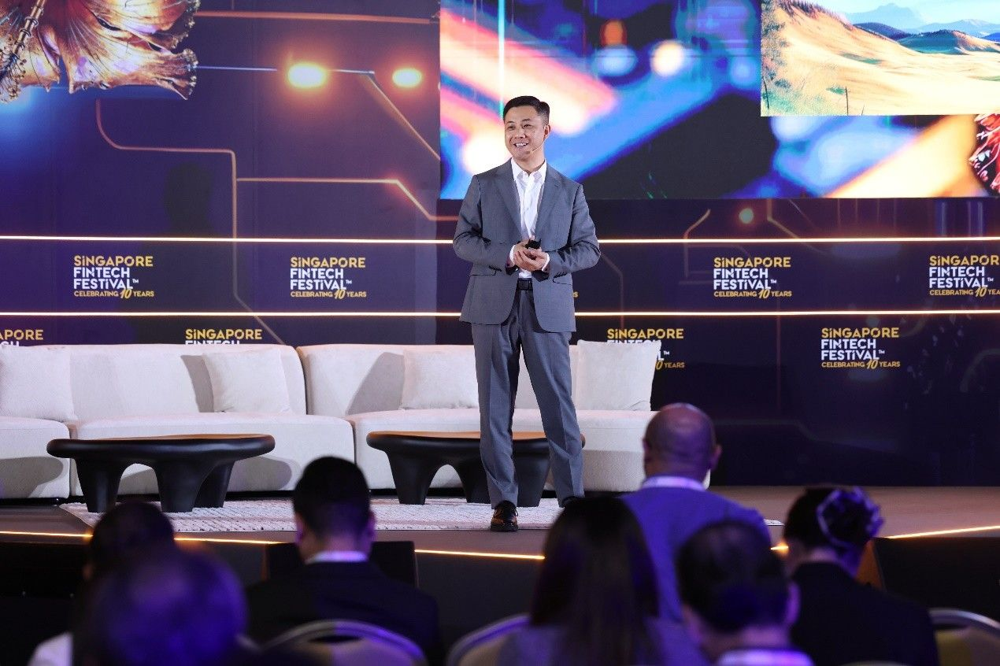

<html>
<title>Huawei Tanıtım</title>
<link rel="stylesheet" type="text/css" href="../haberler.css">
<meta charset="UTF-8">
</html>


<body>


<div class="navigasyon_bar">

	<a href="../haberler.html"> <div class="ic_div">  </div> </a>
	

	<a href="../../huawei_hakkında/huawei_hakkinda.html"> <div class="ic_div"> Huawei Hakkında </div> </a>
	<a href="../../urunler/urunler.html"> <div class="ic_div"> Ürünler </div> </a>

	<a href="../../sürdürülebilirlik/sürdürülebilirlik.html"> <div class="ic_div"> Sürdürülebilirlik </div> </a>

	<a href="../../eğitim/egitim.html"> <div class="ic_div"> Eğitim </div> </a>
	<a href="../../haberler/haberler.html"> <div class="ic_div"> Haberler </div> </a>

</div>

<!------------------------------------------------------------>

<div class="haber_sayfasi">
<h1 class="baslik">
Huawei Dijital Finans, Küresel Finansta Akıllı Dönüşümü Öncülük Etmek Amacıyla SFF 2025'te Dikkat Çekici Bir Şekilde Ortaklarıyla Birlikte Yer Aldı</h1>

<p class="metin">
<br><br><br>

[Singapur, 13 Kasım 2025] Singapur FinTech Festivali 2025'te (SFF 2025), Huawei Dijital Finans Birimi CEO'su Jason Cao, "Dijitalin Ötesinde: Yapay Zeka Destekli Finansa Doğru" başlıklı bir açılış konuşması yaptı. Konuşmasında, Huawei'nin senaryo tabanlı ajanlar, yapay zeka platformları, veri ve bilgi platformları ve altyapı alanlarındaki yeniliklerini vurgulayarak, finans sektöründe yapay zeka kullanımının temel zorluklarını ele aldığını belirtti. Sistematik mühendislik yeteneklerinden yararlanan Huawei, finans kurumlarının akıllı dönüşümlerini hızlandırmalarına yardımcı olmayı hedefliyor.
<br><br>
Cao, "Akıllı çağ, aşırı kişiselleştirme ile karakterize edilecek. Finansta yapay zeka kritik bir aşamaya ulaştı ve kilit nokta, gerçek iş değeri sunabileceği temel üretim süreçlerine ve iş senaryolarına derinlemesine entegre edilmesinde yatıyor. Önümüzdeki on yılda rekabet avantajı elde etmek için finans kurumları, iş akışlarında yapısal dönüşümü sağlamak üzere yapay zekadan yararlanmalıdır." dedi.

<br><br>




Son on yılda, finansal dijitalleşme zaman ve mesafe engellerini ortadan kaldırdı ancak yine de 80/20 kuralını izledi: kaynakların %80'i temel kullanıcıların %20'sine hizmet ediyor. Önümüzdeki on yılda, yapay zeka "bir kişi, bir ekip" modelini yaygınlaştıracak ve her bireye, birincil hizmet portalı olarak süper yapay zeka asistanları aracılığıyla tam bir ekibin yeteneklerini kazandıracak. Cao, "Geleceğin finansal hizmetleri, ürünleri doğrudan bireylere önermekten, onları kişisel süper asistanlara yönlendirmeye doğru evrilecek. Bu değişime öncülük eden ve son derece kişiselleştirilmiş hizmetler sunanlar öne geçecek." diye vurguladı. Yapay zeka odaklı yapısal dönüşümün, finansal hizmet modelleri, iş birliği modelleri, risk kararları ve altyapı dahil olmak üzere tüm yönleri kapsayacağını da sözlerine ekledi.

<br><br><br>

<h2>Tüm Senaryolarda Zekaya Ulaşmak İçin Dört Katmanlı Sistematik Bir Çözüm Oluşturmak </h2>

Cao, küresel finans kurumlarının yapay zekâ tabanlı uygulamaları geliştirmek için izlediği iki yolu özetledi: Büyük kurumlar, her rol için bir yapay zekâ asistanı ve her müşteri için güvenilir bir yapay zekâ danışmanı sağlayan bir ajan matrisi oluştururken; küçük ve orta ölçekli kurumlar ise kredi gibi yüksek değerli senaryolara odaklanarak, akıllı süreçler elde etmek için ajanları hızla devreye alıyor. Bugüne kadar Huawei, küresel finans müşterilerinin ofis, operasyonlar, pazarlama, risk yönetimi ve müşteri hizmetleri alanlarında 500'den fazla yapay zekâ kullanım senaryosunu hayata geçirmelerine yardımcı oldu. Bu, müşterilerin iç verimliliklerini artırmalarına, son kullanıcılara daha fazla değer sunmalarına ve tekil senaryolardan sistematik, kapsamlı çözümlere geçiş yapmalarına yardımcı oluyor.

 <br><br><br>


Huawei Dijital Finans CEO'su Jason Cao, Dhipaya Sigorta'ya Huawei'ye duydukları güven için teşekkür etti. Çin sigorta sektöründeki yıllardır süregelen dijital dönüşüm uzmanlığına dayanarak, Huawei Sigorta İş Birimi, küresel sigortacıların dijital temellerini güçlendiren ve sektörün akıllı evrimini hızlandıran temel modernizasyon çözümleri sunmak için önde gelen ortaklarla iş birliği yapmıştır. RongHai Programı aracılığıyla Huawei, Çin'in en iyi bağımsız yazılım tedarikçileri (ISV'ler), seçkin yerel sistem entegratörleri (SI'lar) ve sektör müşterileriyle iş birliği yaparak dört taraf arasında ortak başarı yaratmaya kendini adamıştır. Dhipaya Sigorta projesi, bu iş birliği modelinin Asya-Pasifik bölgesinde en iyi uygulama örneği olarak gösterilmektedir.
 <br><br><br>


Huawei, akıllı bilgi işlem platformunu, bilgi işlem gücü, platformlar, mühendislik ve senaryoları kapsayan sistematik bir çözümün merkezine yerleştirmiştir. Yapay zeka çıkarımında yüksek eşzamanlılık ve düşük gecikme taleplerini karşılamak için Huawei, önde gelen bir bilgi işlem gücü platformu geliştirmiştir. Bu temel, finansal aracı platformları ve veri ve model mühendisliği uygulamalarıyla entegre edilmiş, birleşik bir bilgi ve veri platformu aracılığıyla kurumsal çapta yapay zeka veri yönetimini destekleyerek, uçtan uca (E2E) yapay zeka yeteneklerinin kapalı bir döngüsünü oluşturmaktadır. Huawei, küresel ekosistem ortaklarıyla iş birliği yaparak, yüksek değerli senaryolarda yapay zekanın yaygınlaştırılmasını hızlandırmak için tam kapsamlı teknolojik ivmeyi ortaya koymaktadır.
 <br><br><br>


Akıllı mobil bankacılık senaryosunda, Huawei ve büyük bir Çin bankası, yeni nesil akıllı mobil hizmet mimarisini birlikte geliştirdi. Akıllı bilgi işlem altyapısı ve yapay zeka platformları üzerine kurulu olan mimari, hiyerarşik çoklu ajan iş birliğinden, uzun süreli bellek depolamasından ve donanım ve yazılım genelinde uçtan uca performans optimizasyonundan yararlanıyor. Bu sayede %90'ın üzerinde niyet tanıma doğruluğu ve 1,2 saniyeye kadar düşük gecikme süresi elde edilerek bankanın pasif yanıttan proaktif hizmete dönüşmesi sağlandı.
 <br><br><br>


İleriye dönük olarak Huawei, lider bilgi işlem gücü platformunu, sistematik yapay zeka mühendisliği uzmanlığını, yapılandırılmış ekosistem gelişimini ve müşterileri ve ortaklarıyla yeni ortak yaratım modellerini geliştirmeye devam edecektir. Bu girişimler, müşteri etkileşimini güçlendirecek, risk yönetimini iyileştirecek ve uçtan uca iş dönüşümünü yönlendirecek, değer odaklı yapay zeka uygulamalarını finans sektörüne daha da entegre edecek ve finans kurumlarının yapay zekayı etkin bir şekilde benimsemesini hızlandırmaya yardımcı olacaktır.
 <br><br><br>

<h2>Yeni bir finansal yapay zeka ekosistemi kurmak için daha fazla RongHai ortağıyla iş birliği yapılıyor.</h2>


RongHai Programı'nın başlatılmasının üzerinden bir yıl geçtikten sonra, Huawei Dijital Finans, RongHai ortaklarıyla birlikte 20'den fazla ülkede çözümler uygulamaya koydu. Birlikte, küresel finans müşterilerine yeni temel sistem kurulumu, veri platformu yükseltmeleri ve yapay zeka inovasyonunda destek sağladılar
 <br><br><br>


Bu etkinlik sırasında Huawei, RonghHai programının üç ortağı olan Neuxnet, Speakly AI ve TrustDecision ile birlikte Suudi Arabistan'ın önde gelen finans kurumu Atmaal ile stratejik iş birliği anlaşmaları imzaladı. Huawei'nin RonghHai programının ortak ağı da üç yeni üye ile genişlemeye devam etti: Dünya çapındaki merkez bankaları için istikrarlı ödeme hizmetleri sağlayan CMA; akıllı dış arama ve pazarlama yetenekleri sunan Instadesk; ve finans kurumları için model geliştirme, çıkarım ve hizmetler sunan MagicEngine. Giderek artan sayıda değerli finansal çözüm ortağı, Huawei ile küresel iş birliğini hızlandırıyor.
 <br><br><br>


Jason Cao, Ronghai programı aracılığıyla Huawei'nin küresel ortaklarla birlikte finansal üretim akışı boyunca sistematik olarak bir yapay zeka ekosistemi oluşturmak için "altı yetenekli küme" kurmayı hedeflediğini vurguladı. Bu, model geliştirme, ajan mühendisliği, sektör bilgi tabanları ve senaryo tabanlı uygulamaları içerirken, uçtan uca donanım-yazılım sinerjisi yoluyla yapay zeka dağıtım verimliliğini optimize etmeyi amaçlıyor.
 <br><br><br>

Finans sektörü dijitalleşmeden dijital ve akıllı dönüşüme doğru ilerlerken, Huawei müşterileri ve ortaklarıyla iş birliğine dayalı inovasyonu güçlendirmeye, finansal iş akışlarını yeniden şekillendirmeye ve ekosistem gelişimini ilerletmeye odaklanmaya devam edecektir. Bu çabalar, yapay zekanın teknoloji etkinleştirmenin ötesine geçerek verimlilikte önemli bir iyileşme sağlamasına ve akıllı finans alanında yeni bir sayfa açmasına olanak tanıyacaktır.


</p>

</div>


<footer class="alt-banner">
  <h1 class="footer_baslik">HUAWEI</h1>


<div class="ustbar">

	<a href="../../index.html" > 
	</img>
	</a>

		<a href="https://www.facebook.com/HuaweiEnterprise" > 
	</img>
	</a>
<a href="https://www.linkedin.com/company/huawei-enterprise" > 
	</img>
	</a>
<a href="https://x.com/HUAWEient" > 
	</img>
	</a>
<a href="https://www.instagram.com/huaweient/" > 
	</img>
	</a>
<a href="https://www.youtube.com/user/HuaweiEnterprise" > 
	</img>
	</a>
	

</div>


  <div class="foot_divs">
    <a href="https://app.huawei.com/eplus/front/index.html#/download">
      <div class="foot_div1">
        
        Huawei e+ Uygulaması
      </div>
    </a>

    <a href="https://app.huawei.com/eplus/soho/front/index.html#/download">
      <div class="foot_div1">
        
        Huawei eKit Uygulaması
      </div>
    </a>

    <a href="https://m.support.huawei.com/intl/prod/enterprisemobile/brochure/index_en.html">
      <div class="foot_div1">
        
        Huawei HiKnow Uygulaması
      </div>
    </a>

    <a href="https://app.huawei.com/eplus/smb/front/index.html#/download?countryCode=Global">
      <div class="foot_div1">
        
        Huawei eFly Uygulaması
      </div>
    </a>
  </div>

  <div class="foot">
    <a href="https://www.huawei.com/en/contact-us">Bize Ulaşın</a>
    <a href="https://www.huawei.com/en/legal">Kullanım Şartları</a>
    <a href="https://www.huawei.com/en/privacy-policy">Gizlilik Politikası</a>
    <a href="https://www.huaweicloud.com/intl/en-us/">Huawei Bulut</a>
  </div>

  <p class="last_foot">© 2026 Tüm hakları saklıdır</p>
</footer>


</div>

</body>
